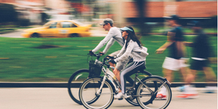
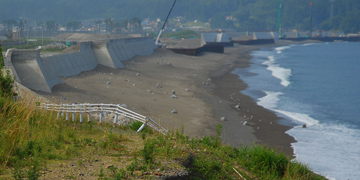

<body class="no-sidebar">
	<div id="page-wrapper">

		<!-- Header -->
		<header id="header">
			<h1 id="logo"><a href="/"></a></h1>
			<nav id="nav">
				<ul>
					<li class="current"><a href="/">Home</a></li>
					<li ><a href="/#people">People</a></li>
					<li ><a href="/projects.html">Projects</a></li>
				</ul>
			</nav>
		</header>

		<header id="mobile-logo">
			<h1>
				<a href="/"></a>
			</h1>
		</header>

		<!-- Main -->
		<article id="main">
			<!-- Projects -->
			<section class="wrapper style3 container ", id = "research">
				<header class="major title">
					<h2>SLR <strong>Graphs</strong></h2>
				</header>

				<div class="row">
					<div class="6u 12u(narrower)">

						<section>
							
						</section>

					</div>
				</div>
				<div class="row">
					<div class="6u 21u(narrower)">

						<section>
							
						</section>

					</div>
				</div>
				<div class="row">

					<div class="6u 21u(narrower)">

						<section>
							
						</section>

					</div>

				</div>
			</section>
		</article>
